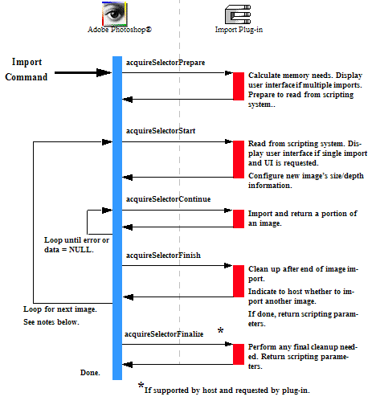

|
|
Adobe Photoshop SDK |
|
Writing Import Plug-insImport plug-in modules are used to capture images from add-on hardware, such as scanners or video cameras, and put these images into new Photoshop document windows.Import modules can also be used to read images from unsupported file formats, although file format modules often are better suited for this purpose. File format modules are accessed directly from the Open command, while Import modules use the Import sub-menu. For descriptions of the sample Import plug-ins provided with the SDK, see Import Samples. The calling sequence for Import modules is a little more complex than other types of plug-in modules. In a single invocation, Import modules are capable of capturing multiple images and creating multiple new Photoshop document windows. Because captured images may be large, each capture may require multiple exchanges between the host and the module. When the user invokes an Import plug-in module by selecting its name from the Import submenu, Photoshop calls it with the sequence of selector values shown in the figure below. The actions the Import plug-in needs to take for these selectors are discussed in more detail in Import Modules.

Special Error Handling for Import Plug-insIn the event of any error during import, the document being imported is discarded.Advance State and Import ModulesThe AdvanceStateProc callback allows the plug-in the drive the interaction through the inner acquireSelectorContinue loop without actually returning to the plug-in host. In the Import module, theAdvanceStateProc can only be called from the acquireSelectorContinue handler.
If the host returns an error, then the plug-in should treat this as an error condition and return the error code when returning from the Import Modules and ScriptingThe scripting system passes its parameters at every selector call. While it is possible to use the scripting system to store all your parameters, for backwards compatibility, it is recommended you track your parameters with your own globals. Once your globals are initialized, you should read your scripting-passed parameters and override your globals with them. The most effective way to do this is:
This way, the scripting system overrides your parameters, but you can use the initial values if the scripting system is unavailable or has parameter errors, and you can use your globals to pass between your functions. Scripting at acquireSelectorFinishIf your plug-in is scripting-aware and it has changed any initial parameters, it should pass a complete descriptor back to the scripting system in thePIDescriptorParameters structure.Multiple ImportThe plug-in host can loop back to acquireSelectorStart after completing acquireSelectorFinish to begin importing another image for multi-image importing if the following conditions are true:
The plug-in host can also loop back to
Batch ImportBatch Importing is a feature of the scripting system that automatically processes multiple files through your scripting-aware Import module. If your Import module is scriptable, Batch Importing is handled completely by the host, which passes parameters and control to your Import plug-in as part of a script. Batch Import is available from the Actions palette.Batch Import versus Multiple ImportWhile Multiple Import is an internal feature available in the Import module, Batch Import is based on the host scripting mechanism. Here are some issues that should help you determine whether to implement Multiple Import or Batch Import:
If you decide to implement Multiple Import but still want your plug-in to be scripting aware, then we recommend you follow the GradientImport example from the SDK, and export your Multiple Import commands as a single scripting event. Batch Import of a module that does Multiple Import would be the most appropriate for digital cameras, for instance, where the user wants to grab every other image in the camera's buffer. |